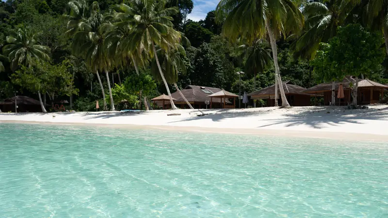
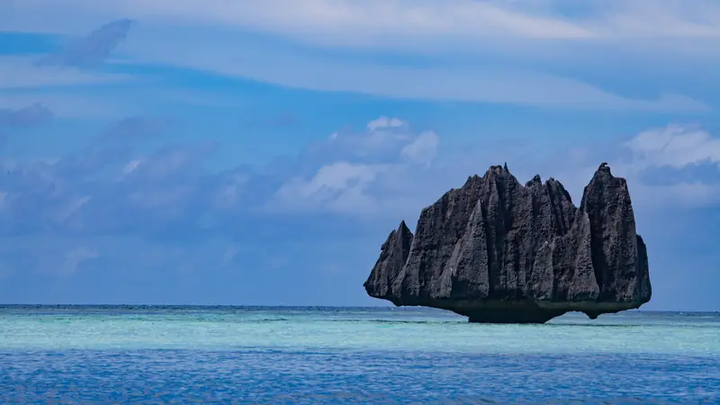
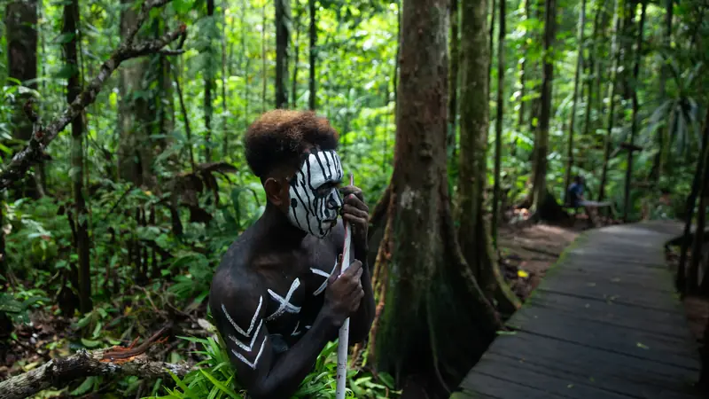
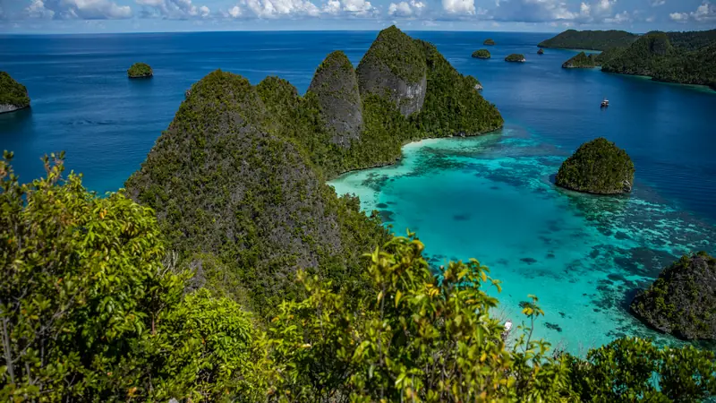
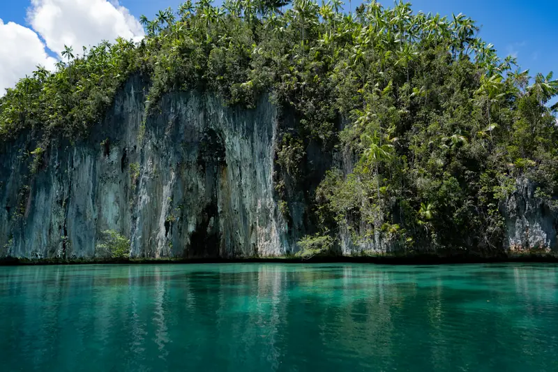
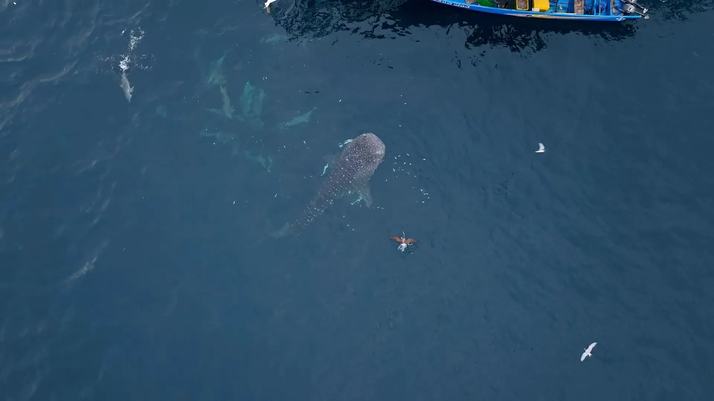
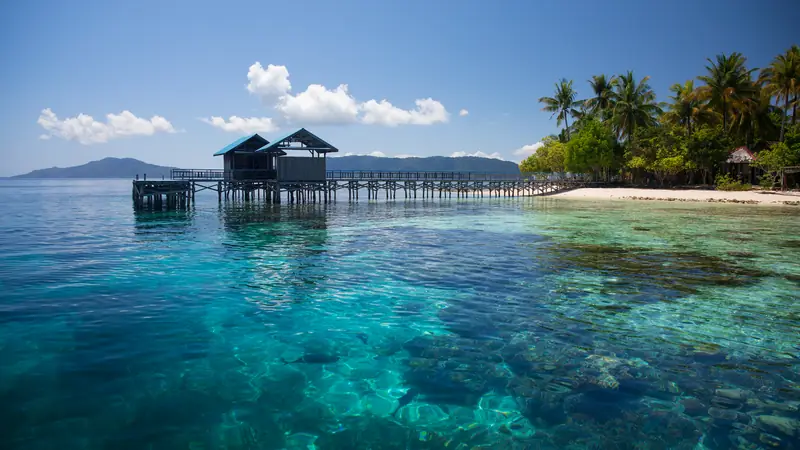
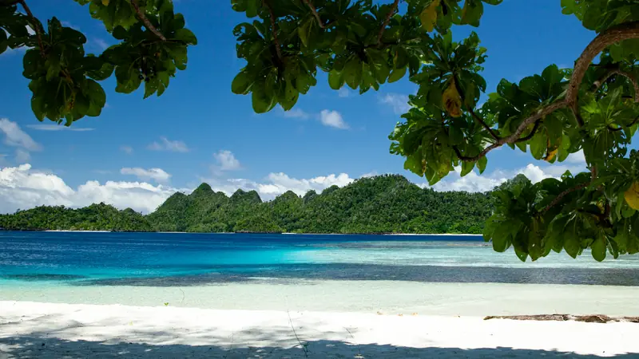
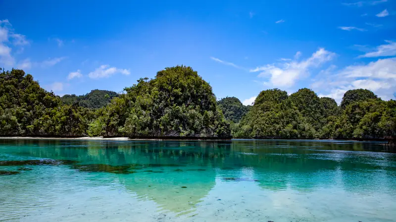

Raja Ampat
Hundreds of limestone islands, hidden lagoons and some of the richest reefs on Earth.
- Best months
- Month–month
- Diving
- Optional
- From
- $X,XXX pp
Why go to Raja Ampat
Explore by private yacht, or combine island lodges with a private speedboat. Diving and snorkelling fit in wherever you want them.



Central Raja Ampat
Karst lagoons, viewpoints and reefs within an easy boat ride of the lodges.

Misool
The wild south: limestone labyrinths, turquoise lagoons, caves and almost uninhabited islands.

Triton Bay
Whale sharks, limestone walls and ancient rock paintings near Kaimana.
Add-on
Private trips in Raja Ampat


Prices per person, two travellers sharing; the slider shows how the price moves with days. The final price comes with your proposal.
Prefer your own boat? Yacht charters
What a trip looks like: a real 9-day trip
- Deposit X% to confirm
- Our team on the ground 24/7
- Medical evacuation plan
- Dive safety standards
- Google rating X.X
- Details in FAQ
Reviews
A guest review goes here: two or three lines in their own words.
A guest review goes here: two or three lines in their own words.
FAQ
When is the best time to travel?
Indonesia covers an enormous area, so seasons vary between regions. We recommend a destination by the month you travel, not by one season for the whole country.
How do I get to Raja Ampat?
Fly to Sorong on a domestic flight, usually through Jakarta or Makassar. From Sorong it is a boat ride to the islands, and we arrange every transfer.
Do I need to be a diver?
No. Many journeys combine snorkelling, islands, wildlife and time on land. Diving is optional unless a trip says otherwise.
What if someone gets sick or hurt?
Before every journey we plan the route around the nearest medical help and an evacuation plan. Our team on the ground is reachable 24/7.

Plan your Raja Ampat trip
Tell us where and when, and we handle the rest.
Travel agent? Get trade rates